Kelley Blue Book
Icons & Illustrations
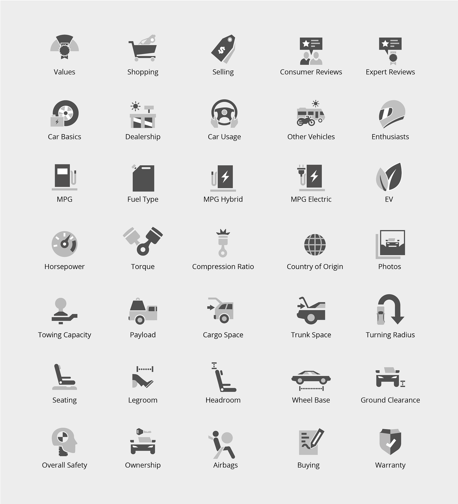
A unified icon and illustration system for Kelley Blue Book, spanning every touchpoint from digital product to marketing.
Built to flex across web, app, and editorial — anchored in KBB's trusted, approachable voice.
Spot Icons
A comprehensive spot icon set designed for clarity at every size. Grounded in a consistent visual weight and optical corrections that make the system feel human — not mechanical.
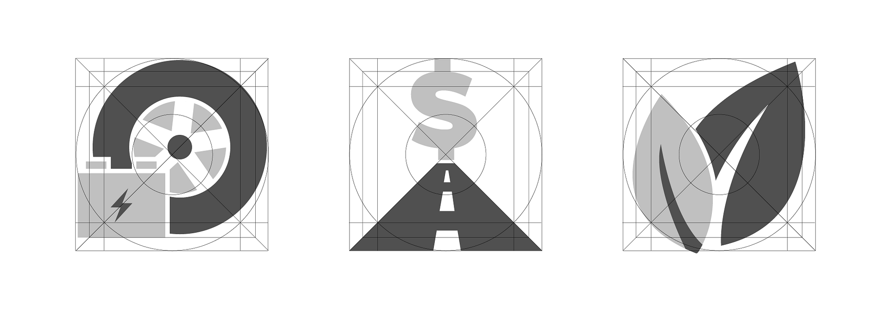
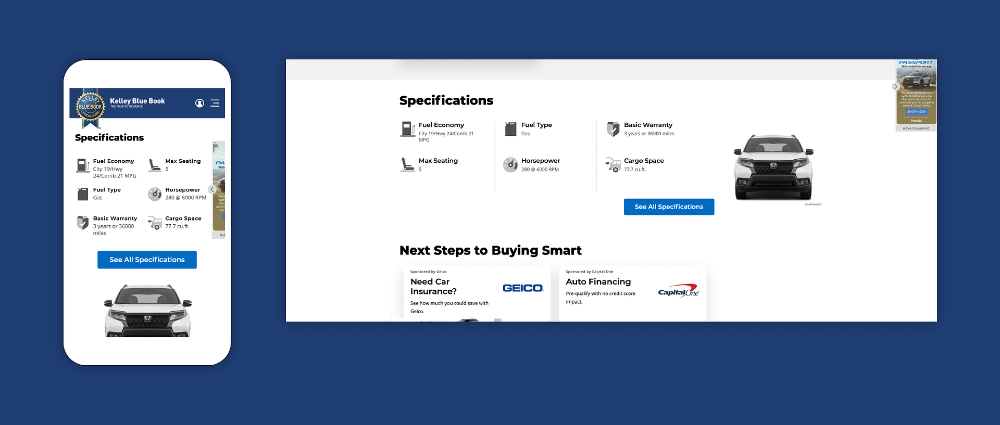
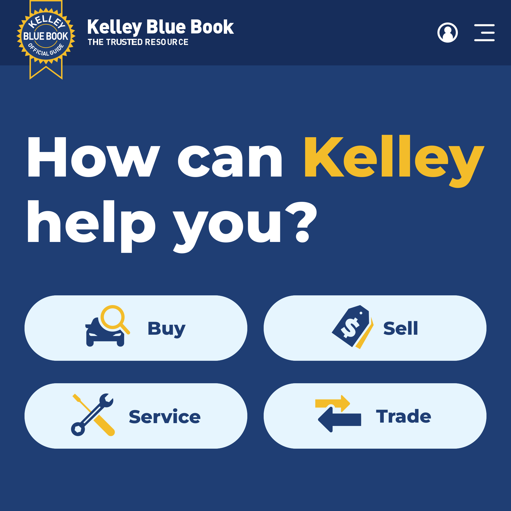
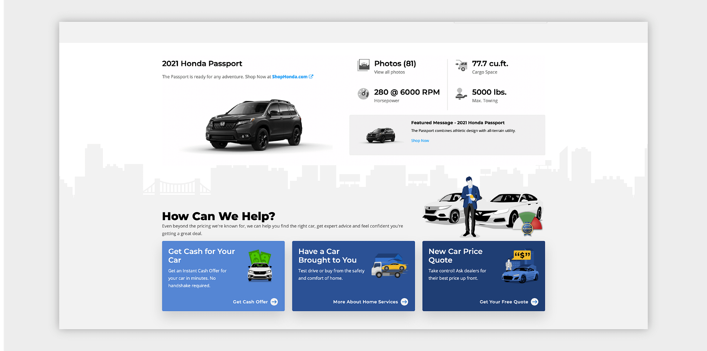
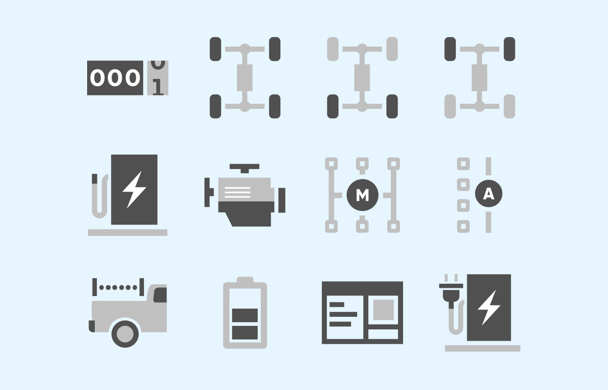
Illustrations
Spot illustrations for empty states, entry points, and marketing moments. A semi-flat style that pairs with KBB's photography-forward product without competing.
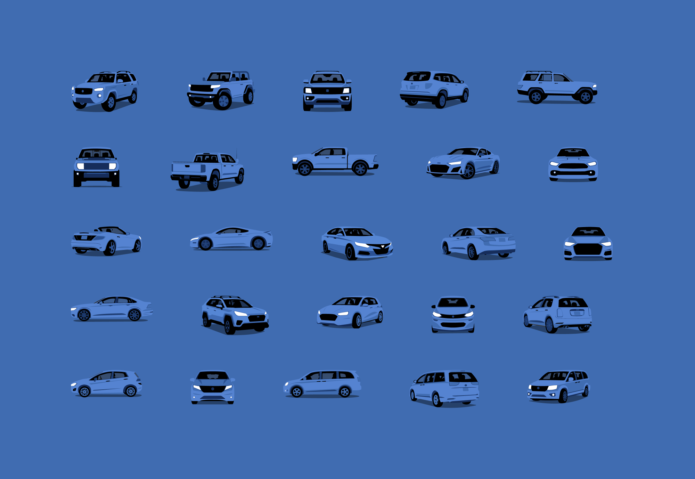
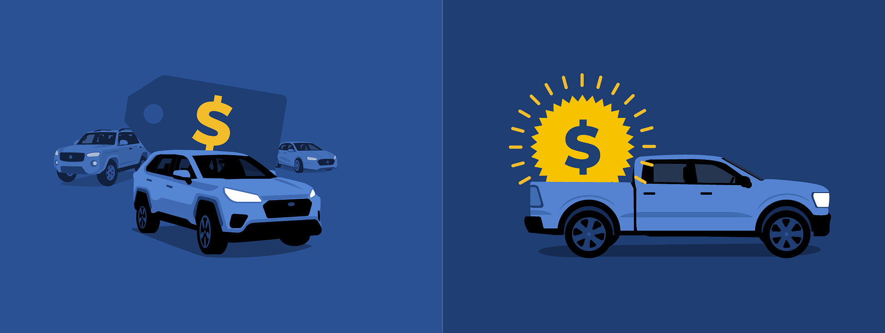
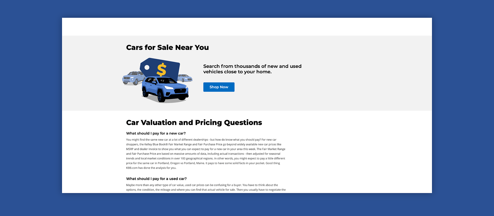
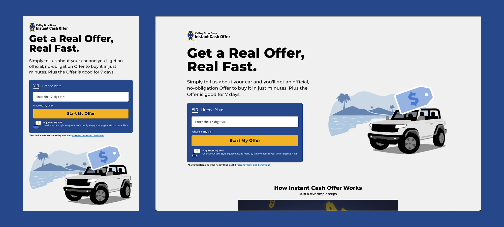
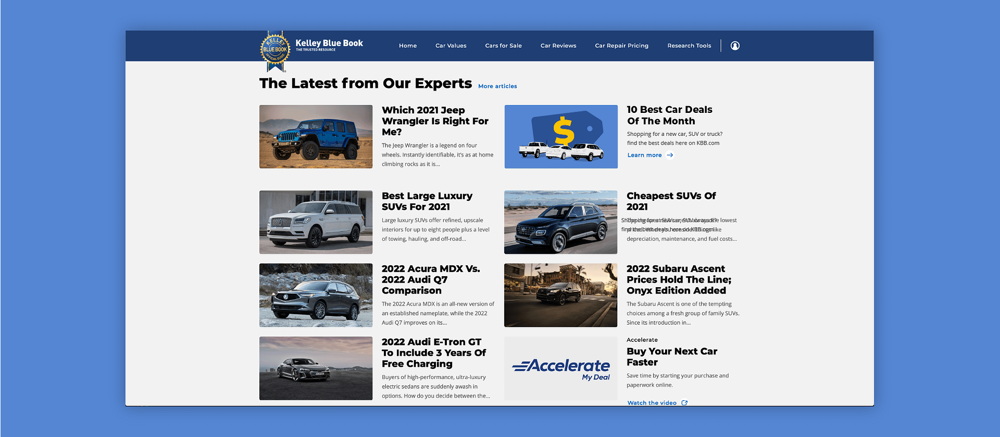
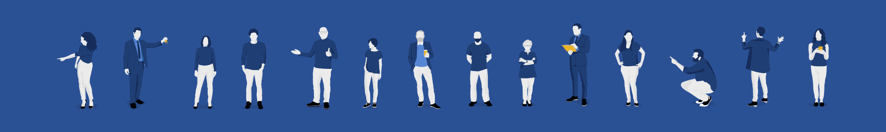
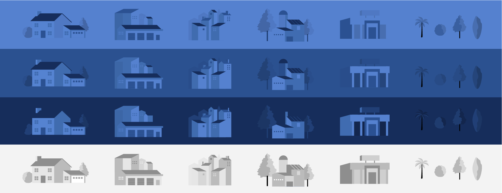